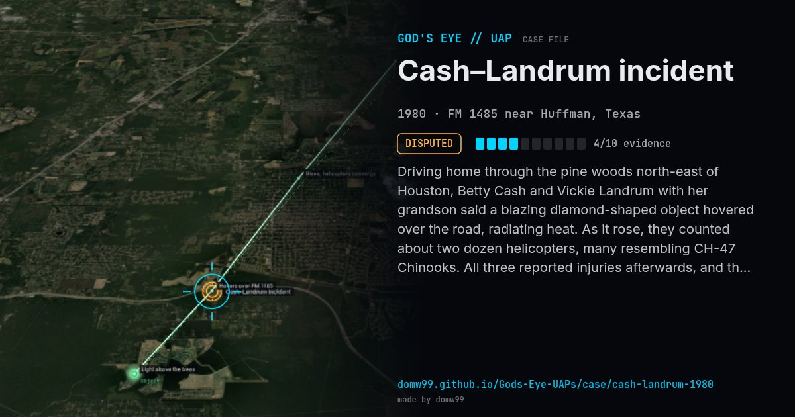

Cash–Landrum incident
DISPUTED

Driving home through the pine woods north-east of Houston, Betty Cash and Vickie Landrum with her grandson said a blazing diamond-shaped object hovered over the road, radiating heat. As it rose, they counted about two dozen helicopters, many resembling CH-47 Chinooks. All three reported injuries afterwards, and they sued the U.S. government.
Explanation
Army and Air Force inquiries found no helicopters or craft that matched; the witnesses’ lawsuit against the U.S. government was dismissed in 1986. Skeptics question the medical and helicopter claims.
What was seen
Shape: Diamond-shaped object venting flame; escorted by ~23 helicopters
Witnesses: Betty Cash, Vickie & Colby Landrum; other motorists
Duration: ~20 minutes
Browse
- United States
- 1980s
- Disputed
- Close encounters
- Official government documents
- Many independent witnesses
- Documented physiological effects
- Triangles and V shapes